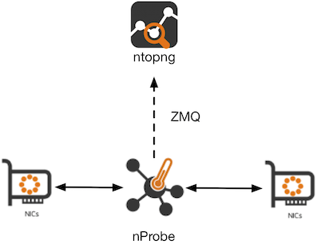
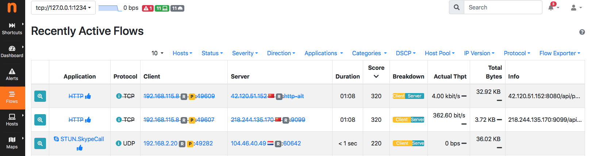

Запуск nProbe в режиме IPS
nProbe 9.5.210610 и позже появился новый режим IPS. Это означает, что можно запустить nProbe в качестве прозрачного моста и блока выбранный трафик на основе настроенных политик трафика.

В этой настройке вы можете комбинировать видимость сети, предлагаемую ntopng, с возможность применять политики и блокировать угрозы, предлагаемые nProbe при работе в режиме IPS.
Варианты использования IPS
Типичные случаи использования включают в себя:
Возможность кластеризации однородных хостов в пулы, к которым может быть применена специализированная политика.
Блокировать трафик на основе протокола приложения (DPI). Пример: заблокировать BitTorrent-трафик.
Разрешить/заблокировать доступ в зависимости от страны или региона. Пример: разрешить SSH доступ к серверу 1.2.3.4 только из Италии.
Блокируйте соединения, у которых есть проблемы с безопасностью. Пример: заблокировать соединения TLS с недействительными сертификатами.
(Только для Linux) Назначьте максимальную пропускную способность выбранным протоколам. Пример: назначьте NetFlix 10 Mbit пропускной способности.
IPS и ntopng
nProbe в режиме IPS интегрирован с ntopng, который может действовать как:
консоль мониторинга для визуализации полицейского трафика.
конфигуратор политик для создания политик трафика.
Мониторинг трафика
nProbe и ntopng были улучшены, чтобы сообщать информацию о дорожном движении, контролируемом полицией. Потоки, которые не разрешены (т. е. исключены из политики IPS), обозначаются перечеркнутой линией, поэтому что можно сразу увидеть, какой трафик был сброшен, а какой вместо него идет в сети.

Интеграция осуществляется легко через ZMQ. Пример:
nprobe --zmq tcp://*:1234 --ips-mode /etc/nprobe/ips-rules.conf -i nf:0
ntopng -i tcp://127.0.0.1:1234
В приведенном выше примере политики определены в /etc/nprobe/ips-rules.conf согласно формат, описанный далее в этом руководстве.
Конфигурация политики
В качестве альтернативы ручной настройке политики с помощью файла конфигурации: ntopng можно использовать для настройки политик и автоматического экспорта их в nProbe через канал ZMQ. Это можно настроить, установив параметр --ips-режим параметр для никто и используя –zmq-публиковать-события возможность настроить конечную точку ntopng ZMQ для IPS события. Пример:
nprobe --zmq tcp://*:1234 --ips-mode none --zmq-publish-events tcp://127.0.0.1:5557 -i nf:0
ntopng -i tcp://127.0.0.1:1234 --zmq-publish-events tcp://*:5557
Пожалуйста, обратитесь к документации ntopng для получения более подробной информации о Пулы хостов и политики трафика настройка с помощью Интернета GUI.
FreeBSD против реализации Linux IPS
Режим IPS доступен как для Linux, так и для FreeBSD (включая OPNsense и pfSense). системах, и хотя командная строка и файл конфигурации едины для всех платформ, их Режим работы совершенно другой.
В Linux nProbe использует NetFilter для взаимодействия с системой моста: по существу через NF_QUEUE ядро отправляет nProbe пакетов для анализа/контроля. nProbe выносит вердикт по таким пакеты и сообщает об этом операционной системе, которая будет обрабатывать пакеты, принадлежащие такой поток в ядре вместо отправки их на nProbe для пересылки. Это гарантирует максимальную производительность, поскольку только первые несколько пакетов (обычно до тех пор, пока nDPI не обнаружит протокол приложения) доставляются на nProbe, в то время как rest обрабатывается внутри ядра. Сочетая это с несколькими очередями, это повышает производительность nProbe, которая превосходит типичные показатели инфраструктуры ванильного моста.
На FreeBSD эта возможность недоступна, и поэтому nProbe необходимо соединить пакеты в пользовательском пространстве. за счет снижения производительности. На странице продукта nProbe указаны типичные показатели производительности.
Конфигурация политик
К разным хостам можно применять разные политики трафика, определив пулы хостов на основе IP, подсети (CIDR), MAC-адреса. На основе nProbe версии можно указать переменное количество правил: см. на страницу продукта nProbe для получения более подробной информации об этих ограничениях.
Политика дорожного движения включает в себя:
Блокировка трафика на основе протокола приложения.
Блокировка трафика на основании риски обнаружен библиотекой DPI.
Блокировка трафика на основе информации GeoIP, включая страну и континент.
Блокировка или формирование трафика на основе категорий уровня 7.
Чтобы включить IPS-режим в nProbe файле конфигурации, содержащем определения политик в формате JSON должны быть предоставлены с использованием --ips-режим параметр.
Файл конфигурации должен содержать:
Раздел определения пулов, где каждый пул определяет:
Ан идентификатор, который является числовым и уникальным идентификатором пула.
А имя для бассейна
Список MAC-адресов
Список IP-адресов или подсетей (формат CIDR)
идентификатор принадлежащий политика для применения в бассейне
Пример:
{ "pool": { "id":1, "name": "my pool 1", "mac": [], "ip": [ "192.168.1.0/24"] }, "policy": { "id": 1 }}
Раздел определения политик, где каждая политика определяет:
Ан идентификатор, который является числовым и уникальным идентификатором политики.
А имя для политики
А default_marker который определяет действие по умолчанию для трафика
А поток_риск конфигурация, определяющая, какие риски сопоставления трафика следует исключить
А маркеры раздел, в котором определяются политики, основанные на протоколы и категории
Действие может быть проходить, уронить или маркер (цифра), которым можно нанести форму политики при использовании NetFilter (см. следующий раздел Режим IPS в Linux). Маркеры 1 и 2 используются проходить и уронить действия соответственно.
Определение политики может наследовать от другой политики, на самом деле это хорошая практика. определить глобальную корень политика с идентификатор 0 и определить конкретные политики для каждого пул, как в примере ниже.
Пример:
{ "policy": { "id": 0, "name": "root rule", "default_marker": "pass", "flow_risk": { "bitmap": 12321, "marker": "drop" }, "markers": {"protocols": {}} }}
{ "policy": { "id": 1, "name": "root rule", "default_marker": "pass", "markers": {"protocols": { "Facebook": "drop" }}, "categories": { "29": "drop" }}}
Дополнительные настройки, в том числе:
Определение пользовательских протоколов L7 (для расширения встроенных протоколов nDPI)
Определение категорий (например, для обработки списка вредоносных программ)
Путь к файлам базы данных GeoIP (используется для фильтрации по стране/континенту/AS)
Пример:
{ "custom_protocols": "/etc/nprobe/protos.txt" }
{ "category_file": "/etc/nprobe/lists/nfw_malware_list.txt" }
{ "category_file": "/etc/nprobe/lists/nfw_mining_list.txt" }
{ "geoip": { "asn": "/data/dbip-asn-lite-2021-04.mmdb", "city": "/data/dbip-city-lite-2021-04.mmdb" }}
Полный пример:
### Custom protocols definition ###
# Note: keep protocols and categories definitions before the policy definitions
{ "custom_protocols": "/etc/nprobe/protos.txt" }
### Category files ###
{ "category_file": "/etc/nprobe/lists/nfw_malware_list.txt" }
{ "category_file": "/etc/nprobe/lists/nfw_mining_list.txt" }
### GeoIP ###
{ "geoip": { "asn": "/data/dbip-asn-lite-2021-04.mmdb", "city": "/data/dbip-city-lite-2021-04.mmdb" }}
### Pool definition ###
{ "pool": { "id":1, "name": "my pool 1", "ip": [ "192.168.0.1/24", "10.0.0.0/8", "2a03:b0c0:2:d0::360:4001/48"], "mac": [] }, "policy": { "id":1 }}
{ "pool": { "id":2, "name": "my pool 2", "mac": ["e8:06:88:ff:fe:e4", "02:81:27:b5:f9:f3", "00:01:01:e4:ba:2c"], "ip": ["172.16.0.0/16"] }, "policy": { "id":2 }}
{ "pool": { "id":3, "name": "my pool 3", "ip": [ "131.114.0.0/16" ], "mac": [] }, "policy": { "id": 3 }}
### Policy definition ###
# Continents: Africa / Asia-Pacific / Europe / North America / South America
# Root rule
{ "policy": { "id": 0, "name": "root rule", "default_marker": "pass", "flow_risk": { "bitmap": 12321, "marker": "drop" }, "markers": { "protocols": { "TLS": "pass" }}}}
# Rules definition (son of rule 0)
{ "policy": { "id": 1, "root": 0, "name": "my rule 1", "default_marker": "pass", "markers": { "categories": { "29": "drop" }, "protocols": { "HTTP": "pass" }, "countries": { "IT": "pass", "CN": "drop" }, "continents" : { "Asia" : "drop" }}}}
{ "policy": { "id": 3, "root": 0, "name": "my rule 3", "default_marker": "pass", "markers": { "protocols": { "HTTP": "drop" }}}}
# Subrule of rule 1 (with more restrictions)
{ "policy": { "id": 2, "root":1, "name": "my subrule 2 (son of rule 1)", "default_marker": "drop", "markers": { "protocols": { "53": "pass" }, "hostnames": { "fundingchoicesmessages.google.com": "pass", "www.gstatic.com": "drop", "www.youtube.com": "pass" }}}}
Режим IPS в Linux
IPS-режим в Linux основан на NetFilter и требует конфигурации моста Linux. Часть пакета nProbe, вы можете найти простые файлы конфигурации в /usr/share/nprobe/netfilter/scripts/, включая:
policy_simple.sh : простая реализация политики, показывающая, как перенаправить трафик UDP на nProbe через NF_QUEUE. Весь остальной трафик не будет контролироваться. Этот сценарий предназначен для запуска на автономном хосте.
policy_and_bridge_simple.sh : простая реализация для прозрачного соединения двух сетевых интерфейсов. Этот скрипт создает мост между двумя настраиваемыми интерфейсами и отправляет их трафик на nProbe через NF_QUEUE.
policy_on_bridge.sh : пример конфигурации хоста, который используется для прозрачного соединения сетевых интерфейсов. Это типичная установка для создания прозрачного ограничителя трафика. КАК можно прочитать в скрипте, нужно указать имя для устройств LAN, WAN и BRIDGE. Этот скрипт позволяет вам автоматически отбрасывать трафик, если он не соответствует политике трафика.
policy_with_shaper.sh : то же, что и предыдущий скрипт, но с той разницей, что он также настраивает формирование трафика для назначения трафика шейперам. Этот скрипт позволяет вам как отбрасывать нежелательный трафик, так и формировать разрешенный трафик.
Ниже представлена простая конфигурация NetFilter, создающая очередь с идентификатором 0 и перенаправляющая в нее трафик DNS:
iptables -F
iptables -t nat -F
iptables -t mangle -F
iptables -A OUTPUT -p icmp -j NFQUEUE --queue-num 0 --queue-bypass
iptables -A OUTPUT -p udp --sport 53 -j NFQUEUE --queue-num 0 --queue-bypass
iptables -A OUTPUT -p udp --dport 53 -j NFQUEUE --queue-num 0 --queue-bypass
Как указывалось ранее, примеры сценариев для настройки NetFilter устанавливаются пакетом nProbe в разделе /usr/share/nprobe/netfilter/scripts. Пожалуйста, ознакомьтесь с справкой (запустите скрипт с -час параметр) для описания функций скрипта. Все скрипты имеют поддержку указания интерфейсов через параметры: -W <WAN-интерфейс>, -L <интерфейс локальной сети>, -B <интерфейс моста>. Дополнительная конфигурация может быть доступна в самом скрипте, рекомендуется просмотреть и, в конечном итоге, изменить код сценария в соответствии с вариантом использования.
После настройки NetFilter можно запустить nProbe на интерфейсе NetFilter, используя nf:ID в качестве имени интерфейса (другими словами, сначала настройте NetFilter, а затем запустите nProbe).
Пример конфигурации nProbe:
-i=nf:0
-n=none
--zmq=tcp://*:5556
-T="@NTOPNG@"
--ips-mode=/etc/nprobe/ips-rules.conf
Примечание
В Linux (но не в FreeBSD), когда вы настраиваете правила NetFilter для пересылки в ядре всех пакетов, которые уже были отмечены nProbe, такие пакеты невидимы для nProbe. Это связано с тем, что такие пакеты не наблюдаются nProbe, поскольку они обрабатываются в ядре. В этом случае при привязке ntopng к nProbe объемы трафика сообщенные ntopng, меньше, чем трафик, прошедший по сети.
FreeBSD/OPNsense/pfSense
IPS-режим на FreeBSD не требует специальной настройки, требуется только указать в nProbe в качестве интерфейса тот, к которому должны применяться политики. Пожалуйста, посетите OPNsense и pfsense разделы для дополнительную информацию о конфигурации.